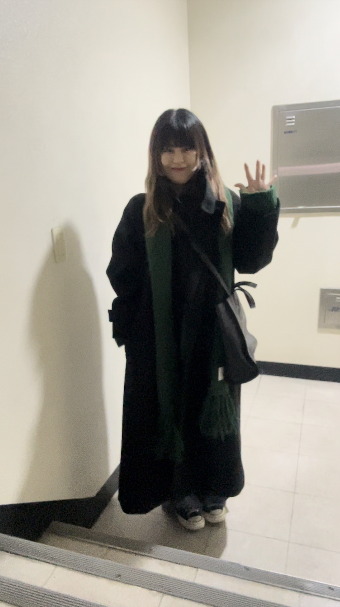

ARCHIVE
Daily Look
Daily Look

💚💚💚
[at -7.3] 한 눈에 반에서 사버린 니트&머플러 세트 사실 처음 택배를 깠을 때, 반품하고픈 욕망이 엄청났다 생각했던 촉감도 아니었고, 잘못 보면 부직포 느낌이(..)나는 연출이었기에ㅠ 하지만 입을 옷이 없어서 반품하지 않고 입었는데 ‘최애'가 되었다 일단 입고 나가면 항상 니트 이쁘다는 말을 듣는다 호호호 머플러와 아주 찰떡ㅠ 머플러는 여러 형태로 연출해 주면 좋다. 내 사랑 와이드 팬트와 컨버스, 이제 거의 4년 째 함께하는 낡은 텔파가방과 하이넥 코트까지 적당한 멋있음(?)을 연출할 수 있다.
[at -7.3] 한 눈에 반에서 사버린 니트&머플러 세트 사실 처음 택배를 깠을 때, 반품하고픈 욕망이 엄청났다 생각했던 촉감도 아니었고, 잘못 보면 부직포 느낌이(..)나는 연출이었기에ㅠ 하지만 입을 옷이 없어서 반품하지 않고 입었는데 ‘최애'가 되었다 일단 입고 나가면 항상 니트 이쁘다는 말을 듣는다 호호호 머플러와 아주 찰떡ㅠ 머플러는 여러 형태로 연출해 주면 좋다. 내 사랑 와이드 팬트와 컨버스, 이제 거의 4년 째 함께하는 낡은 텔파가방과 하이넥 코트까지 적당한 멋있음(?)을 연출할 수 있다.
color